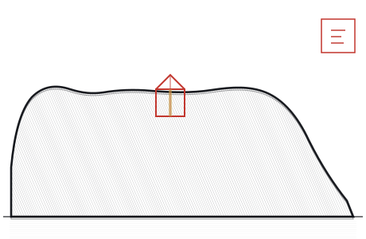
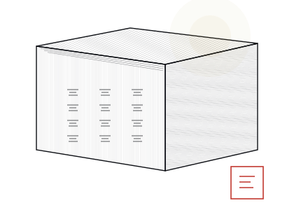
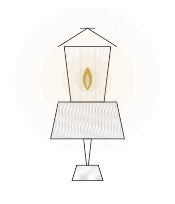
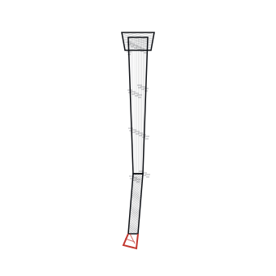
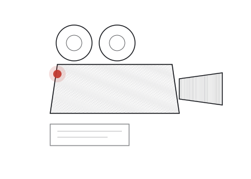
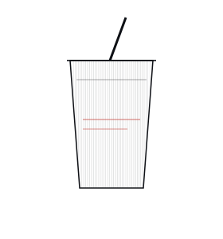
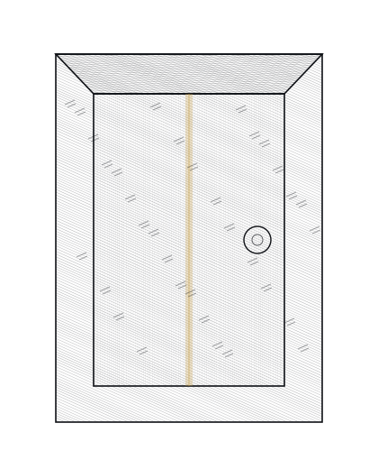

昆明西山睡美人题材 · 中小型原创音乐剧
西山不是山
一夜。一间屋。一扇门。
主 线
她是怎么被看出来的，又是怎么被看错的
全剧只问这一个問題。六个单元，一个晚上，一间堂屋。
机 制
讲述即演出
当守塔人开口，传说中的人物从光里走出来，站到堂屋里；他一停，他们退回光里。讲的人与被讲的人同处一室——于是第四幕那场争执无法回避。
全本剧本 · 对外公开
全部 14 场分场剧本正文、全部唱段完整歌词，对外公开。
本剧为独立原创剧目，与大型版《西山不是山》非删减改编关系。
密码由主创团队分发 · 公开页面仅展示剧目概况
歌 单
全剧七首
点开任意一首，看它的完整歌词。低吟、二重唱、群舞合唱，各有其声。
动 机
五支动机，一支负责不解决
动机 C「门」在全剧从不解决——直到终曲才第一次落地。这是全剧最重要的一条听觉纪律。
人 物
三个人，一间屋
没有反派。只有一个守了四代规矩的人，和一个不肯将就的年轻人。
伏 笔
六件东西，都收到了
每一件信物埋下时，都不是为了好看。它们在最后一场全部落地。
线 稿
六件信物的铜版画
手绘钢笔排线，程序生成。每一张对应剧中的一个实物。






